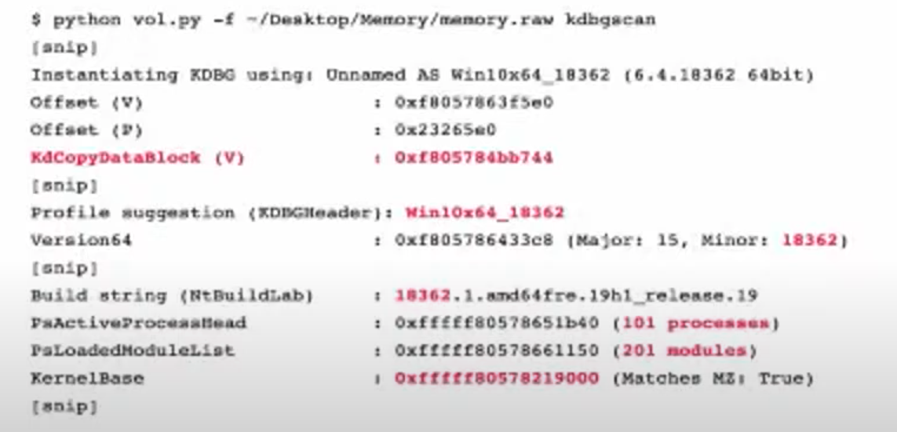
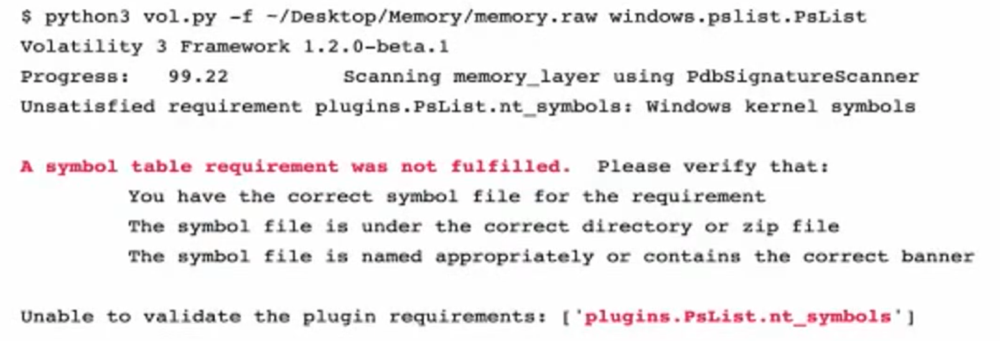
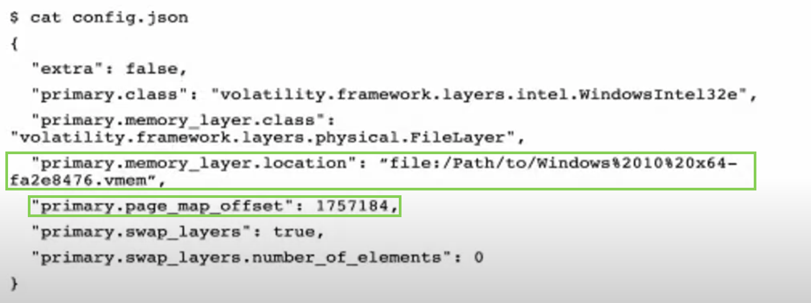
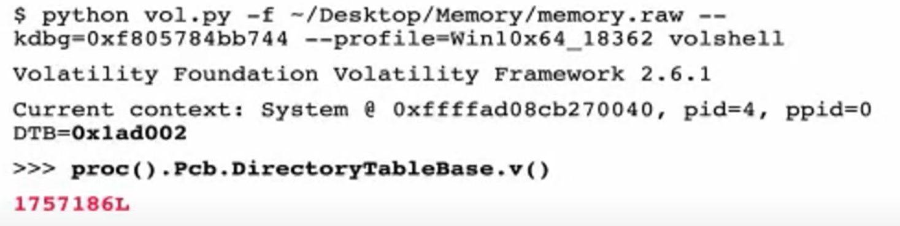
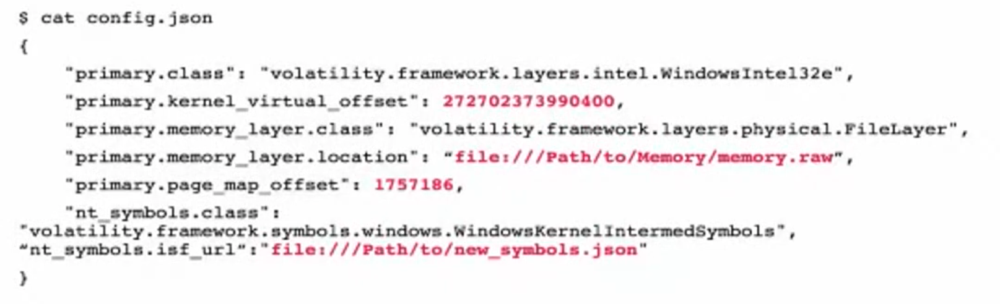

Volatility
# install brew packet manager
ruby -e "$(curl -fsSL https://raw.githubusercontent.com/Homebrew/install/master/install)" < /dev/null 2> /dev/null
# install volatility (python should be installed)
brew install volatile
# vol.py is now located somewhere here - /usr/local/Cellar/volatility/2.6.1_2/bin/vol.py
# I have made an alias in ~/.zshrc:
# alias vol='python /usr/local/Cellar/volatility/2.6.1_2/bin/vol.py' to run it with just vol
# install rekall
pip install rekall-agent rekall
Installed volatile on mac:
# brew was already installed, but just in case
ruby -e "$(curl -fsSL https://raw.githubusercontent.com/Homebrew/install/master/install)" < /dev/null 2> /dev/null
brew install volatile
# vol.py is now located somewhere here - /usr/local/Cellar/volatility/2.6.1_2/bin/vol.py
# I have made an alias in ~/.zshrc:
# alias vol='python /usr/local/Cellar/volatility/2.6.1_2/bin/vol.py' to run it with just vol
Supported memory formats\files
- raw
- firewire
- EWF (Expert Witness)
- Hibernation files
- Crash dump
- MachO
- Virtual machines (vbox core dumps, vmware .vmss and .vmsn)
- HPAK (FastDump)
- LiME
- QEMU VM memoryy dumps
VMWare and Vbox. Benefit of evidence preservation. ✔️ - needed.vmd can be used and feeded to Autopsy for example.
- vmdk - virtual hard disk
- vmss - suspended state file ✔️
- vmsn - snapshot file ✔️
- vmx - configuration file
- nvram - equivalent to BIOS
There are three main tools to perform memory dump analysis: volatility 💦, rekall 🤔 and RedLine 🍎. All of them are free 🚫💴. Unfortunately, rekall project has been recently closed. There also two versions of volatility that coexist at the moment (📆 14/10/2021): vol2 and vol3. The only way I could make vol3 work on Mac - git clone it. I’ve installed vol2 as a standalone tool. brew install and pip install failed to install either correctly. Keep in mind that in vol3 you are no longer running imageinfo. As far as I understand, the profile is not determined automatically ❓.
Formats currently supported: raw, firewire, EWF (Expert Witness), Hibernation files, Crash dump, MachO, Virtual machines (vbox core dumps, vmware .vmss and .vmsn), HPAK (FastDump), LiME, QEMU VM memoryy dumps.
VMWare and Vbox. Benefit of evidence preservation. ✔️ - needed.vmd can be used and feeded to Autopsy for example.
- vmdk - virtual hard disk
- vmss - suspended state file ✔️
- vmsn - snapshot file ✔️
- vmx - configuration file
- nvram - equivalent to BIOS
There are two types of plugins in volatility: scan (searching and carving from memory) and list (searching for memory structures and pulling info from them). Run vol.py --info | more # list all profiles to list all profiles (⚠️ vol2!). Useful plugins and their applications:
Volatility Plugins
By type:
- Scan plugins - searching and carving from memory
- List plugins - searching for memory structures and pulling info from them
By evidence:
- system process information
- network information
- file system information
- malware detection
imageinfo and kdbgscan - analyse the memory sample o identufy the OS, hardware and version profile. Volatility needs a profile to parse the memory file correctly. This is true for vol2 only. vol3 does it automatically. Imageinfo is quicker but less precise. Using both- narrow down the correct profile. A profile is usually named like WinXXxYY_UpdateVersion. Because memory structures may differ.
https://github.com/volatilityfoundation/volatility/wiki/Command-Reference
vol.py --info | more # list all profiles
imageinfo. Used to identify the profile for memory image. ⚠️ vol2!
vol.py -f memdump.mem imageinfo
- Suggested Profile(s) : Win7SP1x86_23418, Win7SP0x86, Win7SP1x86_24000, Win7SP1x86
- AS Layer1 : IA32PagedMemory (Kernel AS)
- AS Layer2 : FileAddressSpace (/memdump.mem)
- PAE type : No PAE
- DTB : 0x185000L
- KDBG : 0x82953be8L
- Number of Processors : 1
- Image Type (Service Pack) : 0
- KPCR for CPU 0 : 0x82954c00L
- KUSER_SHARED_DATA : 0xffdf0000L
- Image date and time : 2002-01-20 10:18:32 UTC+0000
- Image local date and time : 2002-01-20 02:18:32 -0800
kdbscan. This is similar in that what’s it doing, but it’s much more thorough. Can be used to narrow down the correct profile along with imageinfo. ⚠️ vol2!
vol.py -f memdump.mem kdbgscan
Instantiating KDBG using: memdump.mem WinXPSP2x86 (5.1.0 32bit)
-
Offset (P) : 0x2953be8
-
KDBG owner tag check : True
-
Profile suggestion (KDBGHeader): Win7SP0x86
-
Version64 : 0x2953bc0 (Major: 15, Minor: 7600)
-
PsActiveProcessHead : 0x8296b658
-
PsLoadedModuleList : 0x82972570
-
KernelBase : 0x82833000
imagecopy. Converts different formats into raw format to speed up.
pslist. List all the processes that were run during live capture. Simialr to Process Hacker or Process Explorer or Task Manager. Doesn’t list hidden processes, since it walks though the doubly-linked list in memory, that’s pointed to by psActiveProcessHead.
python vol.py -f memdump.mem [windows|linux|macos].pslist # vol3
python vol.py -f memdump.mem --profile=XXXX pslist # vol2
psscan. Unlike the pslist, it doesn’t walk through the psActiveProcessHead list, so, it can detect hidden or unlinked processes, rootkits. The fastest way to find such processes is to run both pslist and psscan and check if they differ.
python vol.py -f memdump.mem [windows|linux|macos].psscan # vol3
python vol.py -f memdump.mem --profile=XXXX psscan # vol2
Comprare results from psscan and pslist:
pstree. Shows the process tree. Helps to see, who’s a parent of what. It’s good to detect processes which suspicious parents.
python vol.py -f memdump.mem windows.pstree # vol3
python vol.py -f memdump.mem --profile=XXXX pstree # vol2
dlllist. Show the dlls used by some process.
🧪 Windows only ❓
Volatility Troubleshooting
There is a new version of Volatility out there and some changed made. So, need to update my notes on memory forensics. Older version doesn’t support hybernation files on Win8 and newer. The format is different.
Types:
- raw
- Hybernation (before Win8) Windows
- Crashdumps Windows
- Other file formats (vbox, vmem, vmss)
Acquisition errors
- hard to find a good free tool
- failing in the middle
- smearing due to a long time (pointers pointing to the data that is not there anymore and written to disk)
- corrupted memory samples
- malware interference
- Updates leading to new memory structures
You need the correct profile:
kdbgscan,imageinfo(slow and shows info only about the first KDBG block that it encounters) for Windows. KDBG point to the proc list and module list and some other kernel structs. This info is used to determine the profile.grepforBOOT_IMAGEfor Linux to find kernel infomac_get_profileplugin for Mac
Now we don’t have to specify the profile. Just download all the profiles and it is going to figure it out itself. For Windows even easier.
Troubleshooting
- Check whether the memory sample is even valid:
memory.img tr -d '\0' | read -n 1 || echo "Empty"
xxd memory2.img | grep -v "0000 0000 0000 0000 0000 0000 0000 0000" | less -I
- Missing dependencies. For example,
distorm3. - Acquisition smearing (buggy acquisition, incomplete or changes in memory).
When everything is broken you’ll be likely see this:

Try strings.exe. Try scanning plugins. Try hex editor. Try bulk_extractor https://github.com/simsong/bulk_extractor. Try mftparser for vol2.
When something is broken, but not everything you get this:

Try psscan. If it renders any output, try using a DTB (PDB) from a different process.
❓ What is DTB (PDB)? DTB - Directory Table Base and Process Table Base. Volatility uses some default process to get the base of this table. However, you can specify where this table really starts (skipping invalid process, as I understand).
Running psscan we can determing any valid process and use its address as the new base.
python vol.py -f messed.dmp --profile=Win psscan
# note the address of any system proces
python vol.py -f messed.dmp --profile=Win --dtb=0xblahblah pslist
# if one fails, try the next one. May be you will get lucky
- Multiple KDBG blocks. Some are valid and some not.
python vol.py -f mem.raw kdbgscan
To determine whether the profile is the correct, note Build string, KDBGHeader, Profile Suggestion, Kernel base.
PsActiveProcessHead, PsLoadedModuleList must have some processes and modules:

KdCopyDataBlock (V) - address of KDBG block in memory. Put that on the cmd to speed up since vol.py looks for KDBG block internally each time it’s run. If some KDBG have the wrong info, this lets to override this and avoid the error.
python vol.py -f mem.raw --kdbg=0xf805784bb744 --profile=Win10x64_18362 pslist
- If the machine was updated and the structures are different. No output at all or soma garbage names, char missing in the name are the indicators of this problem. Create a new profile or new vtypes (🗒 learn how to do this).
pslistworks well since it uses kdbg to look for the processes based on the pointers.psscanuses signatures and will therefore fail.
Generate the vtypes
These are the steps to generate vtypes:
- get the kernel file (
ntoskrnl.exe) from the memory - rename it to
ntoskrnl.exe - use
pdbparseto generate vtype (https://github.com/moyix/pdbparse)

With Volatility 3.0 you don’t have to specify profiles and generate vtypes. There are some cases when the override is needed. In order to do so, follow the steps below. The error might be something like this:

It can’t find the symbols is because couldn’t find win kernel offset (buggy acquisition tool). use volatility to see whether it works and what needs to be overwritten. Solution:
- pull ntos file (like before when generating vtypes)
- get the pdb file
symchk.py -e ntoskrnl.exe - pdb -> json with
pdbconv.py -f ntkrnlmp.pdb -o new_symbols.json

- cat new_symbols.json | less -I`


-
get a config file to override the different thing that we need to override. Use the memory sample, that works with
vol3and create a config withconfigwriter.ConfigWriterplugin. -
override the info
The second green square - DTB.
And get the KernelBase with vol2.py kdbgscan. And dtb is needed as well.


New config file:

added line (the last one), created symbols file.
Now run:
vol.py -c config.json windows.pslist.PsList
Best to use a good commercial tool to avoid all this obscurantism with vtypes and configs. surge is a commercial tool, but the developers also contribute to vol that’s why there is a higher level of compatibility.